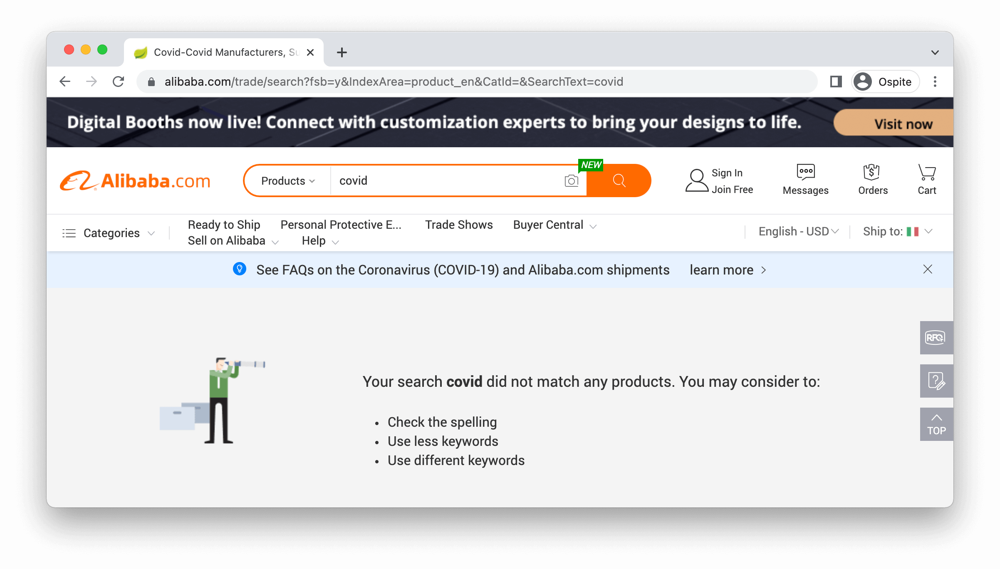
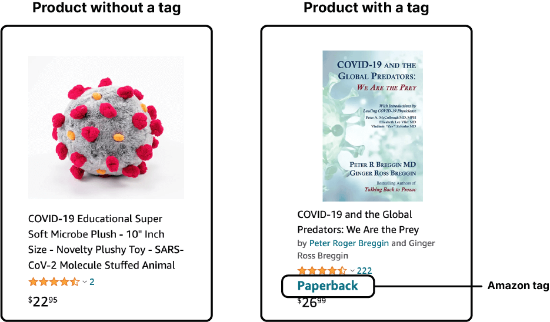
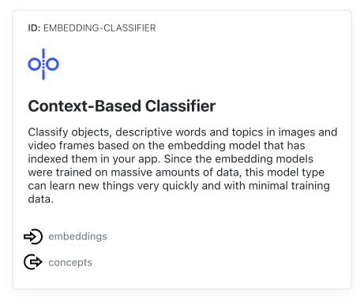

About the project
Lockdown and quarantines made online shopping the preferred method over buying in stores or at the supermarket. In less than a few weeks, Amazon globally became our favourite lockdown companion. The pandemic introduced a new set of
objects into our lives: test kits, bread mixers, handcrafted masks, and many more guided the mapping of a new materiality. However, while scraping the surfaces of various online marketplaces a new focus arose from the research. We started
to think, not only about those objects useful to face the pandemic, but also how some of these came to life thanks to the message they enclosed. These products are souvenirs of the past two years, their meaning describes opinions, trends,
and ideas about this (post?) pandemic world.
My Covid Souvenir is a catalogue you can surf to find the perfect gift to remember the COVID 19 and all that came with it.
Products in this catalogue were collected during November and December 2021.
Aim and focus
The catalogue showcases a large variety of products created in reaction to the global pandemic. By extracting these products from their native context and by providing a different way to explore and navigate through them, the project aims to highlight the recurring communication patterns used to express the concepts, opinions and emotions that have characterized the years influenced by the pandemic.
Process
Context definition
Starting from the research question “Which are the covid related objects sold online worldwide?”, we analysed major online marketplaces such as Aliexpress, Amazon, or Alibaba. Many of these platforms block queries connected to COVID-19 or show non-related products, making our research harder.
We focused on Amazon since it’s a worldwide platform with country-specific marketplaces, in which COVID-related queries are not blocked and it doesn’t require an account to surf the website (as it is on Wish.com or Taobao.com).
For each country, in which Amazon has an operational marketplace, we searched for its most popular e-commerces on Google using the query "top e-commerces + [country]". We excluded those countries in which Amazon wasn’t one of its most popular platforms. The marketplaces exluded are Amazon.com.tr (Turkey), Amazon.cn (China), Amazon.pl (Poland).
Data extraction
The data was extracted from the seventeen selected Amazon marketplaces using a list of queries and saving, for each of them, the first page of results.
Selected Amazon marketplaces
- amazon.sg (Singapore)
- amazon.sa (Saudi Arabia)
- amazon.it (Italy)
- amazon.au (Australia)
- amazon.com (USA)
- amazon.co.uk (UK)
- amazon.nl (the Netherlands)
- amazon.ae (United Arab Emirates)
- amazon.ca (Canada)
- amazon.com.mx (Mexico)
- amazon.se (Sweden)
- amazon.jp (Japan)
- amazon.fr (France)
- amazon.br (Brazil)
- amazon.de (Germany)
- amazon.es (Spain)
- and amazon.in (India)
Queries definition
For each country and language, we formulated specific queries. We used a VPN service to switch IP and fake our location to view the corresponding news about pandemic for each country, in which we identified the most used terms in relation to COVID. These terms then became queries, which we tested on each marketplace, checking if they corresponded to COVID related products. (check all the queries)
Scraping
For each query in each marketplace we saved all the products shown in the first page of results. To do so we used a scraper written in Python (learn more about scraping)
For each product we saved
- Name
- Link
- Marketplace
- Query
- Image
- Amazon tag (tags used to divide some products into categories)
Amazon tags encountered during the research
- Book
- e-Book
- Video disk
- Audio disk
- App
- Mp3 file
- Prime video product
We filtered our dataset by deleting all the products presenting an Amazon tag, focusing on the objects that weren’t tagged, such as masks, gloves, or gadgets about COVID-19.
Then we removed by hand products that weren’t related to COVID-19, following these criterias:
- Products that didn’t mention COVID or pandemic effects in their image, title or shape.
- Products that weren’t used against the virus during the pandemic.
Check the dataset we obtained during this phase.
Dataset expansion
Afterwards, we focused on products we defined as covid souvenirs, those products in which the main characteristic is that they weren’t created to be functional in facing the pandemic. Instead, their main goal is to communicate opinions about various aspects of the pandemic discussion. Therefore we decided to expand our dataset collecting more of these products.
Queries definition
We identified recurrent products categories and topics:
Product categories
- Bracelets
- T-shirts
- Flags
- Mugs
- Socks
- Caps
- Patches
- Stikers
Topics
- COVID
- Vaccine
- COVID pass
- Social distancing
These categories were obtained through the analysis of the starting dataset, however some of them were included afterwards during the manual testing of the queries. For example while searching for shirts and pins, there were many patches
showing up, so we decided to include the Patches category. Sometimes we also used positions about the topic when it produced relevant results (e.g. “pro distanciamento social”).
We formulated new queries derived from product categories combined with topics.
Query = [category] + [topic]
E.g. in Amazon.es (Spain): “camiseta” + “vacuna”
Each query was formulated in the local language of each country of the selected amazon marketplace and then each query was tested by hand in the corresponding marketplace to see if it was functional to our purpose of finding new covid
souvenirs.
Check all the queries
Scraping
Using these queries in the scraper mentioned before we scraped again the 17 Amazon marketplaces, keeping only the products without an amazon tag.
Cleaning
The resulting pool consisted of more than 6000 products, therefore, for each product category, we tagged 50 products manually, and used them to train a custom model on Clarifai, an image recognition service (create a custom model in Clarifai). Finally, we used the Clarifai python API to automatically tag the whole dataset.
The custom model was built on the Clarifai template “context-based classifier”, so it didn’t need too many examples to be trained properly.
Sometimes the same product was sold in multiple amazon marketplaces. We identified the duplicates and then deleted them, keeping only the information about the country in which they were sold. Then we did further cleaning by removing by
hand products that didn’t mention COVID or pandemic effects in their image, title or shape.
As we concluded the cleaning process, the number of products was reduced from more than 6000 to about 2000.
Tagging
After polishing the dataset, among the products we noticed the presence of recurring messages and visual elements. We turned these recurrent elements into tags and, through a manual process, we tagged all the products in the dataset.
To set the tags we followed three main criterias:
- Tags describing objects containing the same visual element
- Tags describing objects containing the same slogan or variations of it
- Tags describing objects referring to the same semantic field
Here’s a list of all the tags emerged and then used to tag the products:
Messages conveyed
- I got the shot
- Social distancing champion
- Kinky COVID
- Look I’m vaccinated
- Keep calm
- Vaccines cause adults
- No vaccine against stupidity
- If you can read this
- Hugs and kisses
- Jesus is my vaccine
- Merry (COVID) Xmas
- Pandemic politics
- My body my choice
- Fuck COVID
- Best doctor/nurse
- Best (COVID) teacher
- Pandemic drinking
- I have my immune system
- No fear no vax
- Freedom fighters
- No COVID passport
- Save lives
- Flatter than Earth
- COVID conspiracy
- Thanks science
- Look I’m anti-vax
- Happy (COVID) birthday
- I survived
- Get vaccinated y’all
Visual elements
- COVID palette
- Stars and Stripes
- QR
- Mask
- Firearms
- Skull
- Middle finger
- Biohazard symbol
- Virus shape
- Syringe
- Vaccine vial
- Caduceus
- Band aid
- Red cross
- Prohibition symbol
- Animals
- We can do it
- People
- Checkmark
- Heart
- Flags
Publishing
We organized our dataset into a virtual catalogue, as we wanted to provide a different way to explore and navigate through the products.
The collections are divided in two main areas, one regarding the conveyed messages and one regarding the visual elements.
Each collection provides a brief introduction to the
content, an overview of the trends within the collection, and the list of Amazon marketplaces where the products are sold.
We added annotations to products which needed a further explanation. Annotations explain memes, pop culture references, cultural references and give translations.
Every product has its own page, with the full name of the product, its category, its tags and the indication of the Amazon marketplaces where the product is sold. We decided to include in the product page the link to its Amazon page to
see the product in its native context.
We named this project “My Covid Souvenir”. It presents a total of 50 collections, in which we organized 2167 products selected and collected across 17 different Amazon marketplaces.
Credits
My Covid Souvenir team
Daniele Dell'Orto
Martina Francella
Octavian Husoschi
Shan Huang
Martina Melillo
Matteo Pini
Alessandro Quets